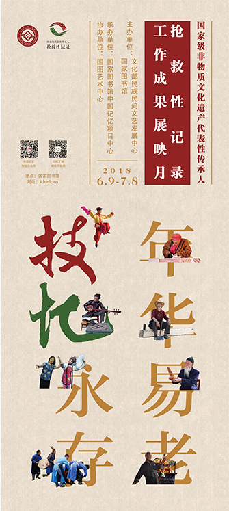

首页>>年华易老 技•忆永存——国家级非物质文化遗产代表性传承人记录工作成果展映简介
年华易老 技•忆永存
——国家级非物质文化遗产代表性传承人记录工作成果展映
年华易老 技•忆永存——国家级非物质文化遗产代表性传承人记录工作成果展映旨在向公众推广及传播此项工作的成果，并为后续传承人记录工作提供示范，通过影像的方式面向公众展现非遗传承人们的技艺、记忆与生活故事。这是国家级非物质文化遗产代表性传承人记录工作成果的集中展示。国家图书馆将推动这些优秀资源长期有效地进行线上永久展示、放映，并运用新媒体和自媒体等大众传播手段，力求扩大传承人记录工作的社会影响力，为非遗记录作品找到观众，为非遗文献资料找到受众，为非遗影像记录与传播提供持续助力。
